Code
import geodatasets
import geopandas as gpd
import matplotlib.pyplot as plt
chicago = gpd.read_file(geodatasets.get_path('geoda.chicago_commpop'))
groceries = gpd.read_file(geodatasets.get_path('geoda.groceries'))import geodatasets
import geopandas as gpd
import matplotlib.pyplot as plt
chicago = gpd.read_file(geodatasets.get_path('geoda.chicago_commpop'))
groceries = gpd.read_file(geodatasets.get_path('geoda.groceries'))chicago.head()| community | NID | POP2010 | POP2000 | POPCH | POPPERCH | popplus | popneg | geometry | |
|---|---|---|---|---|---|---|---|---|---|
| 0 | DOUGLAS | 35 | 18238 | 26470 | -8232 | -31.099358 | 0 | 1 | MULTIPOLYGON (((-87.60914 41.84469, -87.60915 ... |
| 1 | OAKLAND | 36 | 5918 | 6110 | -192 | -3.142390 | 0 | 1 | MULTIPOLYGON (((-87.59215 41.81693, -87.59231 ... |
| 2 | FULLER PARK | 37 | 2876 | 3420 | -544 | -15.906433 | 0 | 1 | MULTIPOLYGON (((-87.62880 41.80189, -87.62879 ... |
| 3 | GRAND BOULEVARD | 38 | 21929 | 28006 | -6077 | -21.698922 | 0 | 1 | MULTIPOLYGON (((-87.60671 41.81681, -87.60670 ... |
| 4 | KENWOOD | 39 | 17841 | 18363 | -522 | -2.842673 | 0 | 1 | MULTIPOLYGON (((-87.59215 41.81693, -87.59215 ... |
ax = chicago.plot()
ax.set_axis_off()
ax = chicago.plot(
column='POP2010',
legend=True,
legend_kwds={
'label': 'Population in 2010',
'orientation': 'vertical',
}
)
plt.tight_layout()
ax.set_axis_off()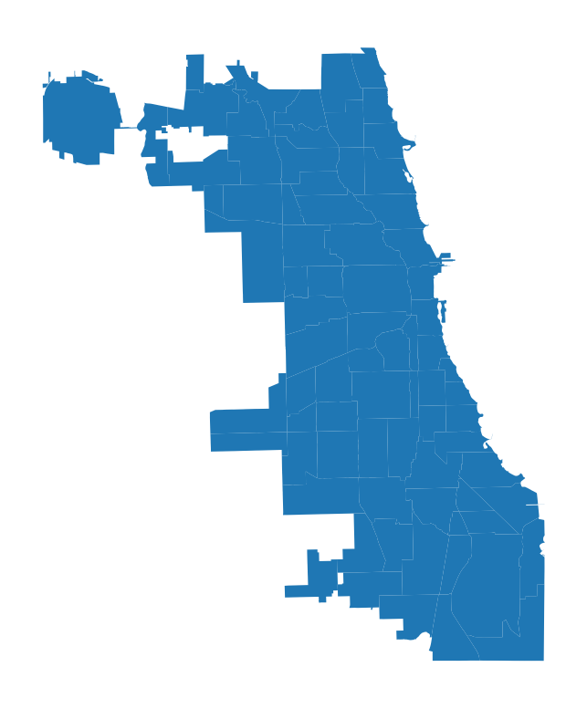
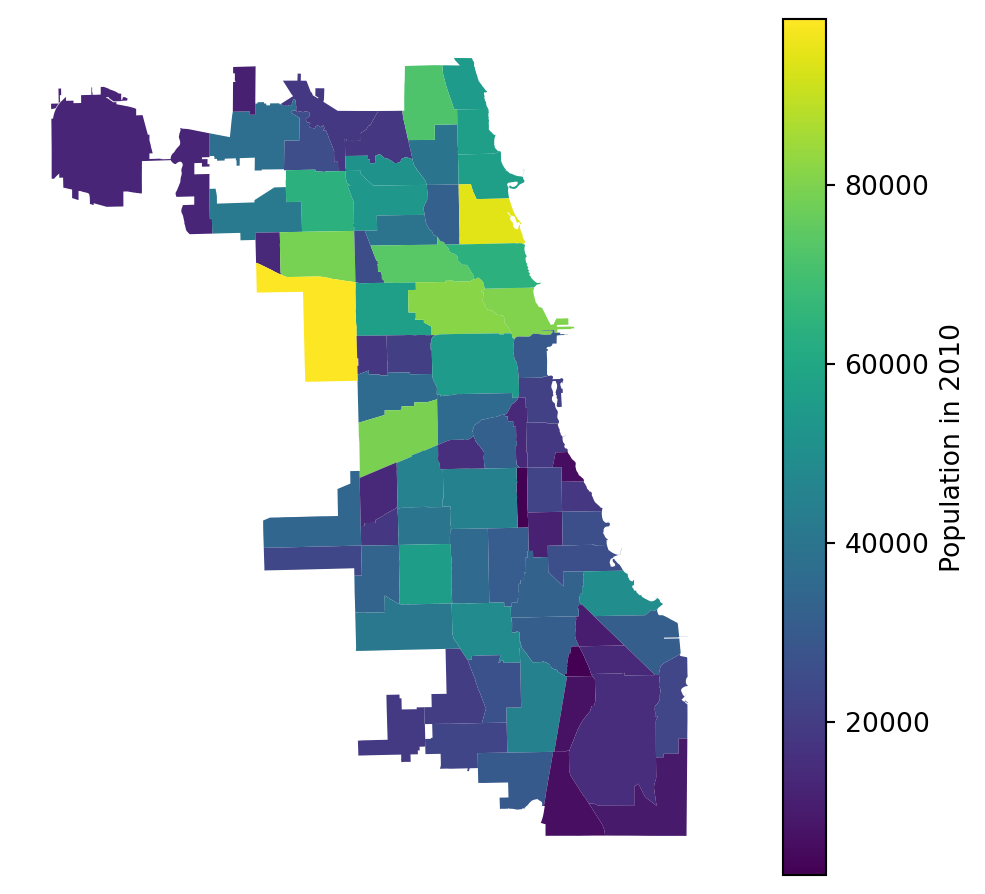
ax = chicago.boundary.plot()
ax.set_axis_off()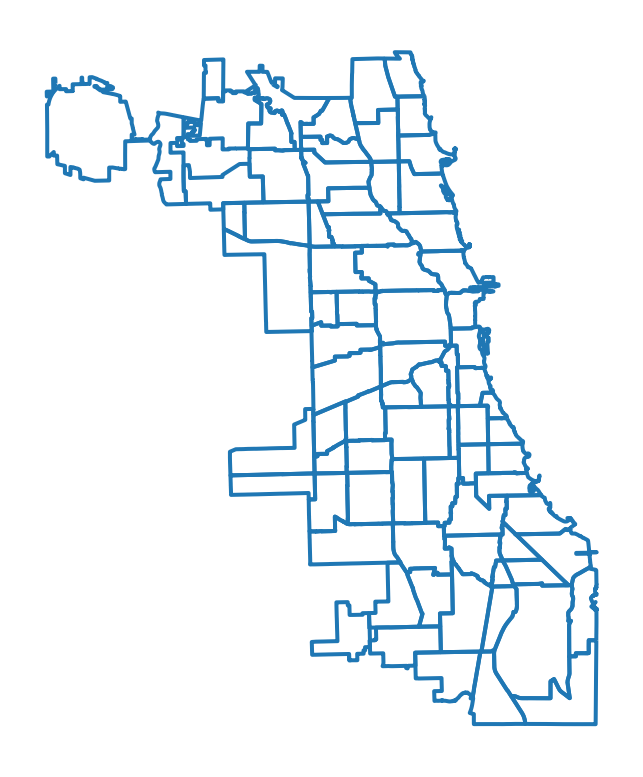
ax = groceries.plot(marker='.', color='red', markersize=5)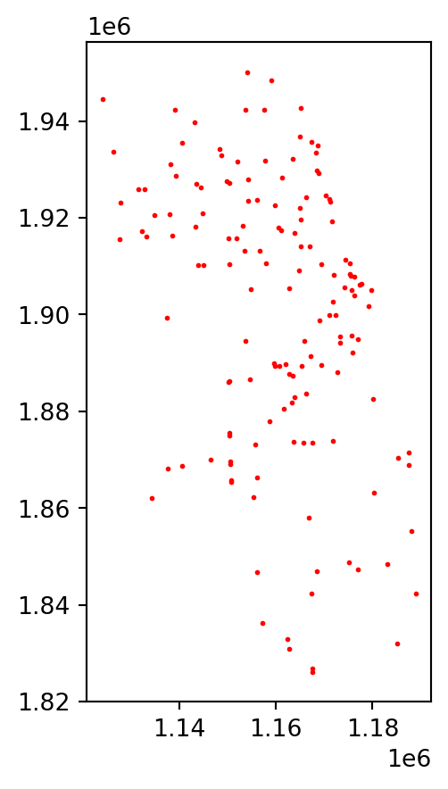
groceries = groceries.to_crs(chicago.crs)import geopandas
import geodatasets
nybb = geopandas.read_file(geodatasets.get_path("nybb"))
chicago = geopandas.read_file(geodatasets.get_path("geoda.chicago_commpop"))
groceries = geopandas.read_file(
geodatasets.get_path("geoda.groceries")
).explode(ignore_index=True)Iris: A powerful, format-agnostic, community-drive Python package for analysing and visualizing Earth science data.
The plots below are just for testing functionality, WIP to replace with ClimRR data
import matplotlib.pyplot as plt
import geopandas as gpd
import warnings
import cartopy.crs as ccrs
import matplotlib.pyplot as plt
import iris
import iris.plot as iplt
import iris.quickplot as qplt
warnings.filterwarnings('ignore')
# testing comment
%matplotlib inline
import matplotlib_inline
matplotlib_inline.backend_inline.set_matplotlib_formats('svg')
from pathlib import Path
from ClimRR import DATA_DIR
plt.rcParams.update({
'axes.facecolor': 'none',
'figure.facecolor': 'none',
'savefig.facecolor': 'none',
'savefig.format': 'svg',
'axes.edgecolor': 'none',
'axes.grid': True,
'axes.labelcolor': '#666',
'axes.titlecolor': '#666',
'grid.color': '#666',
'text.color': '#666',
'grid.linestyle': '--',
'grid.linewidth': 0.5,
'grid.alpha': 0.4,
'xtick.color': 'none',
'ytick.color': 'none',
'xtick.labelcolor': '#666',
'legend.edgecolor': 'none',
'ytick.labelcolor': '#666',
'savefig.transparent': True,
'figure.figsize': (12.4, 4.8),
})shape = gpd.read_file(
DATA_DIR.joinpath(
"GridCells2Shapefile/"
"GridCellsShapefile/GridCells.shp"
)
)
print(f"shape: {shape}")shape: OBJECTID Crossmodel Shape_Leng Shape_Area \
0 1 R161C438 63614.764866 2.529273e+08
1 2 R125C222 61384.219597 2.355013e+08
2 3 R121C235 61111.892875 2.334164e+08
3 4 R169C431 64716.234995 2.617618e+08
4 5 R146C497 60142.919468 2.260731e+08
... ... ... ... ...
62829 62830 R055C359 54822.101620 1.878414e+08
62830 62831 R072C387 55964.448729 1.957512e+08
62831 62832 R085C337 57646.273207 2.076932e+08
62832 62833 R082C288 57528.265213 2.068438e+08
62833 62834 R088C416 56916.790562 2.024700e+08
geometry
0 POLYGON ((-9530601.177 4726046.614, -9534793.8...
1 POLYGON ((-12959076.287 4395610.472, -12974301...
2 POLYGON ((-12754805.395 4355815.951, -12770000...
3 POLYGON ((-9605729.481 4879238.815, -9609863.1...
4 POLYGON ((-8733007.764 4224658.634, -8738250.3...
... ...
62829 POLYGON ((-10965528.715 3400674.224, -10966978...
62830 POLYGON ((-10550370.700 3584259.218, -10552496...
62831 POLYGON ((-11249641.912 3850046.022, -11235259...
62832 POLYGON ((-11942487.554 3816894.598, -11956857...
62833 POLYGON ((-10110300.079 3720413.967, -10124231...
[62834 rows x 5 columns]shape.plot()<AxesSubplot: >
import cartopy.crs as ccrs
import matplotlib.pyplot as plt
import iris
import iris.analysis.cartography
import iris.plot as iplt
import iris.quickplot as qplt
# Load some test data.
fname = iris.sample_data_path("rotated_pole.nc")
air_pressure = iris.load_cube(fname)
# Plot #1: Point plot showing data values & a colorbar
# plt.figure()
fig, ax = plt.subplots()
points = qplt.points(air_pressure, c=air_pressure.data)
cb = plt.colorbar(points, orientation="horizontal")
cb.set_label(air_pressure.units)
plt.gca().coastlines()
# Plot #2: Contourf of the point based data
plt.figure()
qplt.contourf(air_pressure, 15)
plt.gca().coastlines()
# iplt.show()
# Plot #3: Contourf overlaid by coloured point data
plt.figure()
qplt.contourf(air_pressure)
iplt.points(air_pressure, c=air_pressure.data)
plt.gca().coastlines()
# For the purposes of this example, add some bounds to the latitude
# and longitude
air_pressure.coord("grid_latitude").guess_bounds()
air_pressure.coord("grid_longitude").guess_bounds()
# Plot #4: Block plot
plt.figure()
# fig, ax = plt.subplots()
plt.axes(projection=ccrs.PlateCarree())
iplt.pcolormesh(air_pressure)
plt.gca().stock_img()
plt.gca().coastlines()<cartopy.mpl.feature_artist.FeatureArtist at 0x286f40e10>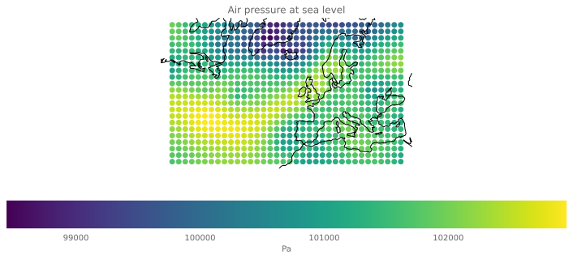
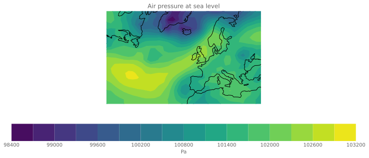
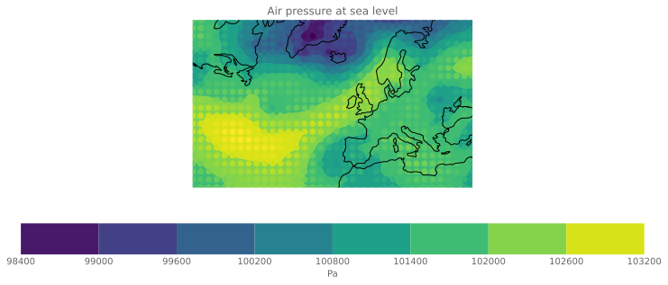
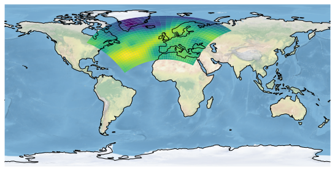
fname = iris.sample_data_path("air_temp.pp")
temperature = iris.load_cube(fname)
fig, ax = plt.subplots()
# Plot #1: contourf with axes longitude from -180 to 180
#plt.figure(figsize=(8, 5))
plt.subplot(121)
qplt.contourf(temperature, 15)
fig.gca().coastlines()
# Plot #2: contourf with axes longitude from 0 to 360
proj = ccrs.PlateCarree(central_longitude=-180.0)
plt.subplot(122, projection=proj)
qplt.contourf(temperature, 15)
fig.gca().coastlines()<cartopy.mpl.feature_artist.FeatureArtist at 0x287263ed0>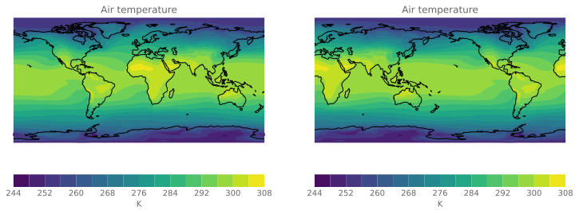
fname = iris.sample_data_path("air_temp.pp")
fig, ax = plt.subplots()
# Load exactly one cube from the given file.
temperature = iris.load_cube(fname)
# We only want a small number of latitudes, so filter some out
# using "extract".
temperature = temperature.extract(
iris.Constraint(latitude=lambda cell: 68 <= cell < 78)
)
for cube in temperature.slices("longitude"):
# Create a string label to identify this cube (i.e. latitude: value).
cube_label = "latitude: %s" % cube.coord("latitude").points[0]
# Plot the cube, and associate it with a label.
qplt.plot(cube, label=cube_label)
# Add the legend with 2 columns.
ax.legend(ncol=2)
# Put a grid on the plot.
ax.grid(True)
# Tell matplotlib not to extend the plot axes range to nicely
# rounded numbers.
plt.axis("tight")(-17.81249542236328, 374.0624038696289, 253.4506408691406, 277.34959106445314)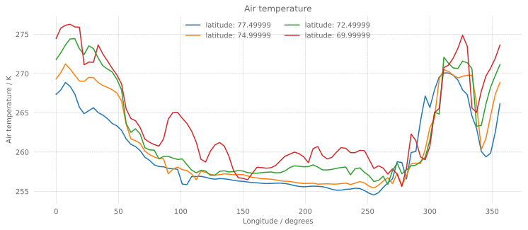
This example demonstrates the use of a single 3D data cube with time, latitude and longitude dimensions to plot a temperature series for a single latitude coordinate, with an inset plot of the data region.
import numpy as np
cube1 = iris.load_cube(iris.sample_data_path("ostia_monthly.nc"))
# Slice into cube to retrieve data for the inset map showing the
# data region
region = cube1[-1, :, :]
# Average over latitude to reduce cube to 1 dimension
plot_line = region.collapsed("latitude", iris.analysis.MEAN)
# Open a window for plotting
fig = plt.figure()
# Add a single subplot (axes). Could also use "ax_main = plt.subplot()"
ax_main = fig.add_subplot(1, 1, 1)
# Produce a quick plot of the 1D cube
qplt.plot(plot_line)
# Set x limits to match the data
ax_main.set_xlim(0, plot_line.coord("longitude").points.max())
# Adjust the y limits so that the inset map won't clash with main plot
ax_main.set_ylim(294, 310)
ax_main.set_title("Meridional Mean Temperature")
# Add grid lines
ax_main.grid()
# Add a second set of axes specifying the fractional coordinates within
# the figure with bottom left corner at x=0.55, y=0.58 with width
# 0.3 and height 0.25.
# Also specify the projection
ax_sub = fig.add_axes(
[0.55, 0.58, 0.3, 0.25],
projection=ccrs.Mollweide(central_longitude=180),
)
# Use iris.plot (iplt) here so colour bar properties can be specified
# Also use a sequential colour scheme to reduce confusion for those with
# colour-blindness
iplt.pcolormesh(region, cmap="Blues")
# Manually set the orientation and tick marks on your colour bar
ticklist = np.linspace(np.min(region.data), np.max(region.data), 4)
plt.colorbar(orientation="horizontal", ticks=ticklist)
ax_sub.set_title("Data Region")
# Add coastlines
ax_sub.coastlines()
# request to show entire map, using the colour mesh on the data region only
ax_sub.set_global()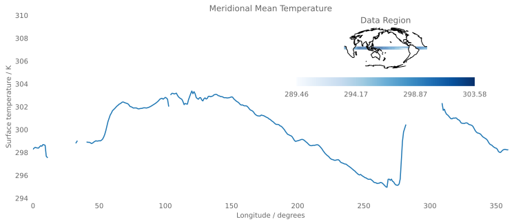
import iris
import numpy as np
import iris.plot as iplt
import iris.quickplot as qplt
from iris.analysis import MEAN
from mpl_toolkits.axes_grid1 import make_axes_locatable
# Loads air_temp.pp and "collapses" longitude into a single, average value.
fname = iris.sample_data_path("air_temp.pp")
temperature = iris.load_cube(fname)
collapsed_temp = temperature.collapsed("longitude", MEAN)
# Set y-axes with -90 and 90 limits and steps of 15 per tick.
start, stop, step = -90, 90, 15
yticks = np.arange(start, stop + step, step)
ylim = [start, stop]
# Plot "temperature" on a cartographic plot and set the ticks and titles
# on the axes.
fig = plt.figure(figsize=[12, 8])
#fig, ax = plt.subplots()
ax1 = fig.add_subplot(111, projection=ccrs.PlateCarree())
im = iplt.contourf(temperature, cmap="RdYlBu_r")
ax1.coastlines()
ax1.gridlines()
ax1.set_xticks([-180, -90, 0, 90, 180])
ax1.set_yticks(yticks)
ax1.set_title("Air Temperature")
ax1.set_ylabel(f"Latitude / {temperature.coord('latitude').units}")
ax1.set_xlabel(f"Longitude / {temperature.coord('longitude').units}")
ax1.set_ylim(*ylim)
# Create a Matplotlib AxesDivider object to allow alignment of other
# Axes objects.
divider = make_axes_locatable(ax1)
# Gives the air temperature bar size, colour and a title.
ax2 = divider.new_vertical(
size="5%", pad=0.5, axes_class=plt.Axes, pack_start=True
) # creates 2nd axis
fig.add_axes(ax2)
cbar = plt.colorbar(
im, cax=ax2, orientation="horizontal"
) # puts colour bar on second axis
cbar.ax.set_xlabel(f"{temperature.units}") # labels colour bar
# Plot "collapsed_temp" on the mean graph and set the ticks and titles
# on the axes.
ax3 = divider.new_horizontal(
size="30%", pad=0.4, axes_class=plt.Axes
) # create 3rd axis
fig.add_axes(ax3)
qplt.plot(
collapsed_temp, collapsed_temp.coord("latitude")
) # plots temperature collapsed over longitude against latitude
ax3.axhline(0, color="k", linewidth=0.5)
# Creates zonal mean details
ax3.set_title("Zonal Mean")
ax3.yaxis.set_label_position("right")
ax3.yaxis.tick_right()
ax3.set_yticks(yticks)
ax3.grid()
# Round each tick for the third ax to the nearest 20 (ready for use).
data_max = collapsed_temp.data.max()
x_max = data_max - data_max % -20
data_min = collapsed_temp.data.min()
x_min = data_min - data_min % 20
ax3.set_xlim(x_min, x_max)
ax3.set_ylim(*ylim)
plt.tight_layout()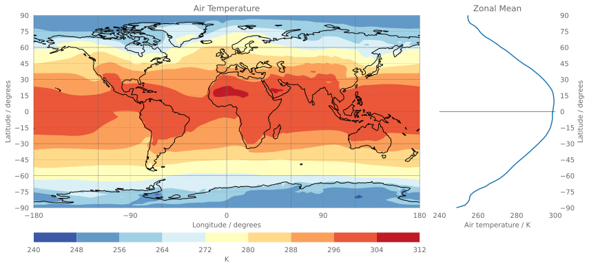
fname = iris.sample_data_path("air_temp.pp")
# Load exactly one cube from the given file.
temperature = iris.load_cube(fname)
# We only want a small number of latitudes, so filter some out
# using "extract".
temperature = temperature.extract(
iris.Constraint(latitude=lambda cell: 68 <= cell < 78)
)
fig, ax = plt.subplots()
for cube in temperature.slices("longitude"):
# Create a string label to identify this cube (i.e. latitude: value).
cube_label = "latitude: %s" % cube.coord("latitude").points[0]
# Plot the cube, and associate it with a label.
qplt.plot(cube, label=cube_label)
# Add the legend with 2 columns.
ax.legend(ncol=2)
# Put a grid on the plot.
ax.grid(True)
# Tell matplotlib not to extend the plot axes range to nicely
# rounded numbers.
plt.axis("tight")(-17.81249542236328, 374.0624038696289, 253.4506408691406, 277.34959106445314)import iris.coord_categorisation
import matplotlib.colors as mcols
fig, ax = plt.subplots()
# Load a sample air temperatures sequence.
file_path = iris.sample_data_path("E1_north_america.nc")
temperatures = iris.load_cube(file_path)
# Create a year-number coordinate from the time information.
iris.coord_categorisation.add_year(temperatures, "time")
# Create a sample anomaly field for one chosen year, by extracting that
# year and subtracting the time mean.
sample_year = 1982
year_temperature = temperatures.extract(iris.Constraint(year=sample_year))
time_mean = temperatures.collapsed("time", iris.analysis.MEAN)
anomaly = year_temperature - time_mean
# Construct a plot title string explaining which years are involved.
years = temperatures.coord("year").points
plot_title = "Temperature anomaly"
plot_title += "\n{} differences from {}-{} average.".format(
sample_year, years[0], years[-1]
)
# Define scaling levels for the logarithmic colouring.
minimum_log_level = 0.1
maximum_scale_level = 3.0
# Use a standard colour map which varies blue-white-red.
# For suitable options, see the 'Diverging colormaps' section in:
# http://matplotlib.org/stable/gallery/color/colormap_reference.html
anom_cmap = "bwr"
# Create a 'logarithmic' data normalization.
anom_norm = mcols.SymLogNorm(
linthresh=minimum_log_level,
linscale=0.01,
vmin=-maximum_scale_level,
vmax=maximum_scale_level,
)
# Setting "linthresh=minimum_log_level" makes its non-logarithmic
# data range equal to our 'zero band'.
# Setting "linscale=0.01" maps the whole zero band to the middle colour value
# (i.e., 0.5), which is the neutral point of a "diverging" style colormap.
# Create an Axes, specifying the map projection.
plt.axes(projection=ccrs.LambertConformal())
# Make a pseudocolour plot using this colour scheme.
mesh = iplt.pcolormesh(anomaly, cmap=anom_cmap, norm=anom_norm)
# Add a colourbar, with extensions to show handling of out-of-range values.
bar = plt.colorbar(mesh, orientation="horizontal", extend="both")
# Set some suitable fixed "logarithmic" colourbar tick positions.
tick_levels = [-3, -1, -0.3, 0.0, 0.3, 1, 3]
bar.set_ticks(tick_levels)
# Modify the tick labels so that the centre one shows "+/-<minumum-level>".
tick_levels[3] = r"$\pm${:g}".format(minimum_log_level)
bar.set_ticklabels(tick_levels)
# Label the colourbar to show the units.
bar.set_label("[{}, log scale]".format(anomaly.units))
# Add coastlines and a title.
plt.gca().coastlines()
plt.title(plot_title)Text(0.5, 1.0, 'Temperature anomaly\n1982 differences from 1860-2099 average.')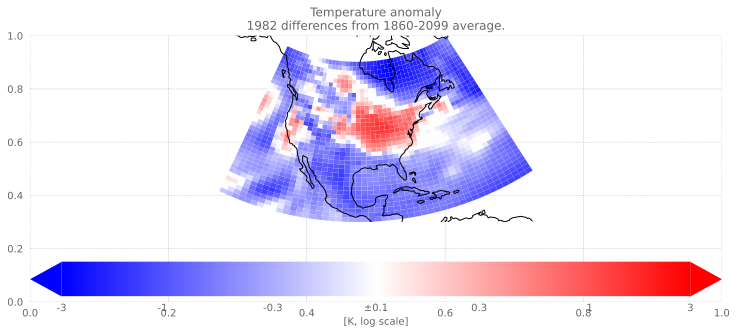